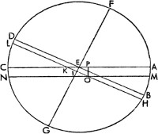
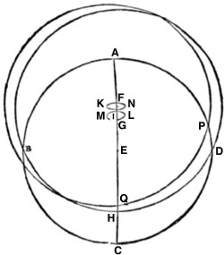
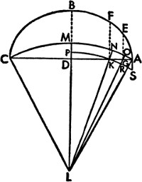
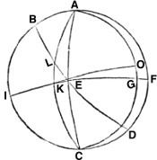
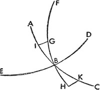

1. Ekinoksların ve Gündönümlerinin Tahmini Üzerine
Yıllık dönüşlerine bağlı olarak sabit yıldızların görünümünü anlattıktan sonra devam etmemiz gerekiyor; bu yüzden evvela, sabit yıldızların hareket ettiğine inanıldığından, ekinoksların değişimi üzerinde duracağız. Eski matematikçilerin dönen ya da bir ekinoks veyahut gündönümü zamanında başlayan doğal yıl ile sabit yıldızlardan biri sayesinde belirlenen yıl arasında bir ayrım yapmadığını görüyoruz. Bu yüzden Küçük Köpek'in doğuşundan hesapladıkları olimpiyat yıllarının, yaz gündönümünden hesaplanan yıllarla aynı olduğunu düşünüyorlardı; zira henüz birinin diğerinden farklı olduğunu bilmiyorlardı. Şaşırtıcı kavrayışıyla ilk defa Rodoslu Hipparchus bunlar arasındaki farklılığa dikkat çekmiş, yılın uzunluğunu pek dikkatli bir şekilde gözlemleyerek sabit yıldızlardan hesap edilen yılın, ekinokslardan ya da gündönümlerinden hesap edilen yıldan daha uzun olduğunu bulmuştu. Buradan hareketle yine yıldızların doğu yönünde, bir kerede hesap edilemeyecek ölçüde yavaş bir devinim içerdiğine de inanmıştı. Fakat zamanın geçmesiyle birlikte devinim daha da belirgin hale geldi. Hatta bizzat devinim sayesinde burçların ve yıldızların doğuşlarıyla batışlarının, eskiler tarafından çok farklı olduğu tanımlanan doğuş ve batışlardan çok farklı olduğunu bulabiliyor; her ne kadar başta aynı konumda ve isimlerde seyretmişlerse de ekliptiğin 12 parçasının sabit yıldızlardaki burçlardan büyük bir mesafeyle geride kaldığını görüyoruz. Dahası düzensiz bir hareket daha bulunmuştur. Gökbilimciler buradaki düzensizliği saptayabilmek adına farklı teoriler geliştirmiştir; bazıları, asılı kalmış Dünya'nın, gezegenlerle ilgili olarak bulduğumuz enlemdeki harekete benzeyen, belirli sınırlar dahilinde orta noktadan sapma derecesi 8ºden fazla olmayacak ölçüde tek yönde ileriye ve bir başka anda da geriye doğru, sallantılı bir deviniminin olduğunu iddia etmiştir. Fakat çoktan eskimiş olan bu teorinin daha fazla savunulacak tarafı kalmamıştır; özellikle de Koç takımyıldızının başının ilkbahar ekinoksundan ve benzer diğer yıldızlardan uzaklığının 8ºnin 3 katı kadar olduğu yeterince açıktır; zaten çağlar boyunca söz konusu gerilemeye dair en ufak bir ize de rastlanmamıştır. Bazıları da sabit yıldızlar küresinin ilerlediğini düşünmüş, fakat düzensiz hareketlerden ötürü, kesin bir hareket tarzı da belirleyememiştir. Dahası, doğanın şaşırtıcı bir özelliğidir ki, anlattığımız gibi, ekliptiğin eğimi bize, Ptolemaeus'a göründüğü kadar büyük görünmemiştir. Bu durumların nedenini bulmak için bazıları dokuz, bazıları on küre olduğunu ve bu küreler sayesinde bunların açıklanabileceğini düşünmüşse de bekleneni verememişlerdir. Hatta on birinci küre de gün yüzüne çıkmaya başlamıştır. Dünya'nın deviniminden bahsederken bu kürelerin sayısının ne kadar da önemsiz olduğunu kolayca ortaya koyabiliriz. Zira birinci kitapta tarafımızca birçok kere açıklandığı gibi, yıllık yükselime ve yeryüzünün merkezine özgü, hiçbir şekilde eşit olmayan iki devinim mevcuttur; yükselimin eski durumuna dönmesi merkeze özgü periyodu az da olsa tahmin etmemizi sağlayabilir, zira bu ekinoksların vaktinden evvel gelmesini gerektirir – sabit yıldızlar küresi doğu yönünde hareket etmez; aksine ekvator, yerküre ekseninin sapması oranında ekliptik düzlemine eğik bir şekilde meylettiğinden, batı yönünde hareket etmiş olur. Daha kesin bir şekilde söylemek gerekirse, ekliptiğe eğik bir şekilde meyleden ekvator çemberi daha büyük; ekvatora meyleden ekliptik çemberiyse daha küçüktür. Buna göre yıllık dönüş boyunca Güneş ile Dünya arasındaki mesafeyle belirlenen ekliptik, Dünya'nın, ekseni etrafındaki günlük dönüşüyle belirlenen ekvatordan çok daha büyüktür. Ve bu sayede yıldızlar geride kalmış görünürken, zamanın geçmesiyle birlikte ekvatorun ve eğik ekliptiğin ortak kesitlerinin ilerlediği görülür. Fakat bu hareketin ölçüsü ve düzensizliğinin oranı bizden öncekilerin gözünden kaçmıştır; zira olağanüstü yavaşlığından ötürü devinimin periyodu henüz bilinmiyordu; insanlar tarafından ilk defa fark edilmesinden sonra çağlar boyunca sadece çemberin on beşte biri, yani 24º kadar ilerleyebilmişti. Bununla beraber gözlemlerin tarihinden günümüze, bu olgularla ilgili öğrendiklerimizin de yardımıyla konuları mümkün olduğunca kesin bir şekilde açıklamaya çalışacağız.
2. Ekinoksların ve Gündönümlerinin Düzensiz Devinmesini Tasdikleyen Gözlemlerin Tarihi
Buna göre Büyük İskender'in ölümünün 30. yılında, Calippusçu 76 yıllık ilk periyodun[120] 36. yılında, sabit yıldızların konumlarını inceleyen ilk kişi olan İskenderiyeli Timochares[121], Başak takımyıldızında yer alan Başakçı'nın[122] 2º güney enleminde ve yaz gündönümü noktasından 821/3ºlik açısal uzanıma sahip olduğunu; üç yıldızdan en kuzeyde bulunan Akrep'in alnında ve burç dizilimi sisteminde ilk sırada yer alan yıldızın 11/3º enlemde ve sonbahar gündönümünden itibaren 32º boylamında yer aldığını kaydetmişti. Aynı periyodun 48. yılında ise Başakçı'nın, yaz gündönümünden itibaren 82,5º boylamında olduğunu, ancak aynı enlemde seyrettiğini bulmuştu. Hipparchus da İskender'in ölümünün 196. yılında, Calippusçu üçüncü periyodun 50. yılında, Aslan'ın göğsünde bulunan Küçük Kral[123] adındaki yıldızın yaz gündönümünün 295/6º doğu yönünde olduğunu bulmuştu. Daha sonra Romalı geometrici Menelaus[124], İmparator Traianus'un[125] (yönetiminin) birinci yılında, İsa'nın doğumunun 99, İskender'in ölümünün 422. yılında Başakçı'nın Başak'ta, yaz gündönümünden itibaren 861/4º boylamında ve Akrep'in alnındaki yıldızın da sonbahar ekinoksundan itibaren 3511/12º boylamında yer aldığını bulmuştu. Sonra Ptolemaeus, Antoninus Pius'un[126] ikinci yılında, İskender'in ölümünün 462. yılında Aslan'daki Küçük Kral'ın, yaz gündönümünden itibaren 321/2º boylamında, Başakçı'nın 861/2º boylamında; yukarıdaki tablolarda da gösterildiği gibi Akrep'in alnındaki yıldızınsa, enleminde hiçbir değişiklik olmaksızın, sonbahar ekinoksundan itibaren 361/3º boylamında olduğunu bulmuştu. Böylece bunları eskilerin kaydettiği şekliyle gözden geçirmiş olduk. Büyük bir zaman atlamasından sonra, İskender'in ölümünün 1202. yılında Machometus Arecensis'in gözlemi gelir; bu gözleme kesin bir şekilde güvenebiliriz. Bu yılda Regulus ya da Basiliscus'un (Küçük Kral) yaz gündönümünden itibaren 44º5' boylamında; Akrep'in alnındaki yıldızın sonbahar ekinoksundan itibaren 47º50'da bulunduğu da görülebilir. Bu yıldızların enlemi tümüyle aynı kalmış; bu yüzden sonuca dair herhangi bir şüphemiz yoktur. Hıristiyan (İsa) takvimine göre 1525 yılında, Roma takvimine göre artık yıldan sonraki yılda ve Mısır takvimine göre İskender'in ölümünden sonra 1849'da, Prusya'daki Frauenburg'da adı geçen Başakçı'nın gözlemini gerçekleştirdik. Buna göre yıldızın meridyen dairesindeki en büyük yüksekliğinin yaklaşık 27º olduğunu gördük. Frauenburg'un enlemi de 54º19,5'ydı. Buna bağlı olarak ekvatordan eğimi de 8º40' kadardı. Konumu şöyle anlaşılabilir: Ekliptiğin ve ekvatorun kutuplarından geçen bir ABCD meridyen dairesi çizeriz. AEC, ekvatorla birlikte çap ve ortak kesit olsun; BED, ekliptikle birlikte çap ve ortak kesit olsun. F, ekliptiğin kuzey kutbu ve FEG de ekseni; B, Oğlak'ın, D de Yengeç'in başlangıcı olsun. Bu durumda yıldızın güney enlemine denk gelen BH yayı 2º olur. H noktasından BD'ye paralel olarak HL çizilsin; bu HL, I noktasında ekliptiğin eksenini, K noktasında ekvatoru kessin. Ayrıca MA yayı, yıldızın güney yükseliminden dolayı 8º 40'ya eşittir. M noktasından AC'ye paralel olarak MN çizilsin. MN, ekliptiğe paralel HIL'yi kesmiş olacak; buna göre MN HIL'yi O noktasında kessin.

Ve OP düz çizgisi, MN ve AC'ye dik olarak çizilirse; bu durumda OP, AM'nin iki katını ayıran kirişin yarısına eşit olur. Fakat FG, HL ve MN çaplarını içeren çemberler ABCD düzlemine diktir; Euclides'in Elementler'inin on birinci kitabının XIX. bölümünde gösterildiği gibi ortak kesitler, O ve I noktalarında aynı düzleme diktir. Böylelikle on birinci kitabın VI. bölümünde de gösterildiği gibi ortak kesitler birbirine paraleldir. I, çapı HL olan dairenin merkeziyse, bu durumda OI çizgisi, HL çaplı çemberdeki bir yayın iki katını ayıran kirişin yarısına eşit olacaktır; buradaki yay, Terazi'nin başlangıcından itibaren yıldızın boylamını ölçen yaya benzer olup aradığımız yayın bizzat kendisidir. Şu yolla bulunur: Dış açı, iç açıyla ters açıya eşit olduğundan AEB açısı, OKP açısına eşittir ve OPK açısı 90ºdir. Buna uygun olarak OP'nin OK'ye oranı, AB'nin iki katını ayıran kirişin yarısının BE'ye olan oranına; o da AH'nin iki katını ayıran kirişin yarısının HIK'ye oranına eşittir. Zira bu çizgiler OPK'ye benzer üçgenleri ihtiva eder; fakat AB yayı 23º28'30''ye; BE 100.000 birimken, AB'nin iki katını ayıran kirişin yarısı da 39.832 birime eşit olup ABH yayı 25º28'30''ye; ABH'nin iki katını ayıran kirişin yarısı 43.010 birime, yükselime denk gelen MA yayı 8º40'ya; MA'nın iki katını ayıran kirişin yarısı da 15.069 birime eşittir. Buradan hareketle HIK, 107.978 birime; OK de 37.831 birime eşit olur; ikisinin farkı olan HO da 70.147 birimdir. Fakat HOI, HGL kirişinin yarısına; HGL yayı da 176ºye eşittir. O halde HOI, BE 100.000 birimken, 99.939 birime eşittir. O halde çıkarma işlemiyle OI, HOI'nın HO'dan farkına, yani 29.792 birime eşittir. Fakat HOI yarıçap olarak 100.000 birim ise OI, 29.810 birime eşittir; bu da 17º21'lık yayın iki katını ayıran kirişin yarısına denktir. Bu, Terazi'nin başlangıcından itibaren Başak'taki Başakçı'nın uzaklığıydı; ayrıca yıldızın konumu da yine burasıydı. 10 yıl evvel, 1515'te bu yıldızın 8º36'lık bir yükseliminin olduğunu da bulmuştuk; konumu Terazi'nin başlangıcından 17º14' uzaklıktaydı. Ptolemaeus, bu yıldızın sadece 0,5ºlik bir yükseliminin olduğunu kaydetmişti; buna göre konumu Başak'ta 26º40'ydı; bu da evvelki gözlemlerle karşılaştırıldığında üç aşağı beş yukarı doğruydu. Buradan şu anlaşılıyor: Toplamı 41/3ºye varan devinme miktarıyla zaman arasında sabit bir oran kurulursa, Timochares'ten Ptolemaeus'a kadarki neredeyse 432 yıllık zaman diliminin tümünde, ekinokslar ve gündönümleri 100 yılda 1ºlik devinmeyle hareket etmiştir. Buna göre Hipparchus ile Ptolemaeus arasındaki 266 yıl içinde Aslan'daki Basiliscus'un boylamı yaz gündönümünden itibaren 2º40' hareket etmiştir; bu yüzden burada da bir karşılaştırma yaparsak, her 100 yılda 1ºlik bir devinmenin bulunduğunu görürüz. Dahası Menelaus ile Albategius'un[127] gözlemleri arasındaki yaklaşık 782 yıl boyunca, Akrep'in alnındaki ilk yıldızın boylamı 11º55'lık bir değişim göstermiştir; kuşkusuz burada 100 yılda bir değil 66 yılda bir 1ºlik değişim, Ptolemaeus'tan sonraki 741 yıl içindeyse 65 yılda 1ºlik bir değişim gösterdiği görülür. En nihayetinde 645 yıllık geri kalan kısım, gözlemimiz sayesinde bulunan 9º11'lık farkla karşılaştırılırsa, her 1ºye 71 yıl düşecektir. Buradan anlaşılıyor ki, ekinoksların devinmesi Ptolemaeus'tan önceki 400 yıl boyunca, Ptolemaeus ile Albategius arasındaki zaman diliminde olduğundan daha yavaş; bu ara dönemdeyse Albategius'tan günümüze kadarki süreden daha hızlı gerçekleşmiştir. Ayrıca eğimin hareketiyle ilgili olarak da bir uzlaşmazlık söz konusudur; zira Samoslu Aristarchus, Ptolemaeus gibi, ekvatorla ekliptiğin eğimini 23º51'20''; Albategius 23º35'; 190 yıl sonra İspanyol Arzachel[128] 23º34'; yine 230 yıl sonra Yahudi Prophatius[129], yaklaşık 2' daha küçük olarak bulmuştu; zamanımızda ise aynı eğim 23º281/2'dan daha büyük bulunmamıştır. Buradan anlaşılıyor ki; bu hareket, Aristarchus'un zamanından Ptolemaeus'un zamanına kadar en yavaş; Ptolemaeus'un zamanından Albategius'un zamanına kadar da en hızlıdır.
3. Ekinokslardaki ve Ekvatorla Ekliptiğin Eğimindeki Değişimi Gösteren Hipotezler
O halde buradan açıkça anlaşılıyor ki; gündönümleri ve ekinokslar düzensiz bir hareketle değişmektedir. Belki de kimse buna ekvatorun kutuplarında ve Dünya'nın ekseninde kesin bir dönme olduğundan daha iyi bir açıklama getiremeyecektir. Bunun Dünya'nın hareket ettiği hipotezinden geldiği görülmektedir; zira sabit yıldızların durağan enlemlerinin de kanıtladığı gibi, ekvator hareket ederken ekliptiğin daimi olarak hareketsiz kaldığı açıktır. Dünya'nın ekseninin hareketi merkezin hareketine oranla basit ve kesin olsaydı, söylediğimiz gibi, ekinokslara ve gündönümlerine ait hiçbir devinme olmazdı; oysa bu hareket değişken bir farkla birbirinden ayrıldığından, gündönümü ve ekinoksların düzensiz bir hareketle yıldızların konumlarının önüne geçmesi gerekir. Her ne kadar bu eğim daha doğru bir şekilde ekvatora yakıştırılmalıysa da, ekliptiğin eğimini düzensiz bir şekilde değiştiren yükselimin hareketi konusunda da aynı durum geçerlidir. Bu nedenle tıpkı terazinin kefeleri gibi tümüyle kutuplara ait iki karşıt hareket olduğu anlaşılmalıdır; zira kutuplar ve çemberler bir kürede karşılıklı olarak, uyum içinde bulunmaktadır. Bu yüzden kesit açısıyla orantılı olarak kutupların aşağı ve yukarı taşındığı, bu çemberlerin eğimini değiştiren bir hareket söz konusudur. Bunun yanında farklı noktalarda yer alan bir akımla gündönümüne ve ekinokslara ait devinmeleri[130] değişimli olarak artıran ve azaltan başka bir hareket daha vardır. Bu hareketlere sallantılar[131] diyoruz; zira bunlar iki uç arasında aynı yönde sallanan cisimler gibi, ortada daha hızlı, uçlarda ise oldukça yavaştır. Yeri geldiğinde de göreceğimiz gibi, bu tarz hareketler gezegenlerin enlemleriyle bağlantılı olarak çok sık gerçekleşmektedir. Kendi periyotlarında da farklılık gösterirler; zira eğim bir kez eski konuma gelirken ekinoksların düzensiz hareketi iki kez eski konumuna ulaşır. Fakat her görünür düzensiz harekette, kendisi sayesinde düzensizliğin düzeyinin ölçülebileceği kesin bir ortalamanın da görülmesi; bunun için de ortalama kutupların, ortalama ekvatorun, ortalama ekinoksların ve ortalama gündönümü noktalarının dikkate alınması gerekir. Kutuplar ve yeryüzü ekvatoru, bu ortalama kutuplardan uzakta, karşıt yönlerde döndürüldüğünden; her ne kadar sabit sınırlar içeriyorsa da bu, düzenli hareketlerin düzensiz olarak görünmesini sağlar. Ve birbiriyle çekişen bu iki sallantı, Dünya'nın kutuplarının, düz çizgileri zaman içinde kıvrımlı ve küçük çelenklere benzer şekilde çizmesini sağlar. Fakat bunları salt kelimelerle iyi bir şekilde ifade edebilmek ya da gözle görmeden duyumla algılayabilmek kolay değil. Bu yüzden bir kürede ekliptik olarak bir ABCD dairesi çizelim; E, kuzey kutbu; A, Oğlak; C, Yengeç; B, Koç; D, Terazi olsun. A, C ve E kutup noktalarından AEC dairesi çizilsin. Ekliptiğin ve ekvatorun kuzey kutupları arasındaki en büyük mesafe EF, en küçük mesafe de EG olsun. Benzer şekilde I, orta konumdaki kutup olsun ve etrafında BHD ekvatoru çizilerek ona ortalama ekvator; B ve D'ye ise ortalama ekinokslar densin.

E kutbunun çevresinde ne varsa, söylendiği gibi, sabit yıldızlar küresi dizisine zıt yönde düzenli ve yavaş bir hareketle sürekli batıya doğru taşınır. O halde yeryüzü kutuplarının, tıpkı asılı cisimler gibi, karşıt iki hareketinin olduğu anlaşılsın; bunlardan biri F ile G sınırları arasında, yükselimin ayrıklığının[132] yani düzensizliğinin hareketi olarak adlandırılabilecek olan; diğeri batıdan doğuya, doğudan da batıya doğru taşınandır. İlkine göre iki kat daha hızlı olan bu ikinci harekete ekinoksların ayrıklığı diyeceğiz. Her iki hareket de Dünya'nın kutuplarına ait olduğundan, şaşırtıcı bir şekilde kutupları saptırır. Buna göre Dünya'nın kuzey kutbu olarak F ile birlikte kutbun etrafında çizilen ekvator, B ve D'nin aynı kesitlerinden, yani AFEC dairesinin kutupları boyunca geçecektir. Fakat FI yayına oranla eğimin açıları daha büyük olacaktır. Bu durumda ortaya çıkan ikinci hareket, başlangıç kabul edilen F noktasından ortalama eğime geçmek üzere olan yeryüzüne özgü kutbun düz bir çizgide FI boyunca ilerlemesine engel olarak onu K'deki, doğu yönündeki en uzak enleme doğru dairesel bir hareketle yaklaştırır. Bu konumun etrafında çizilen, görünür OQP ekvatorunun kesişimi B'de değil, onun doğu yönündeki O'da olacak ve ekinoksların devinmesi BO yayıyla orantılı olarak azalacaktır. Yönünü değiştirip batıya doğru hareket eden kutup, eşzamanlı olarak çekişen iki hareket tarafından ortalama konum I'ya yönlenir. Görünen ekvator da düzenli veya ortalama ekvatorla her açıdan özdeştir. Dünya'nın kutbu buradan geçerek batıya doğru hareket eder, görünen ekvatoru ortalama ekvatordan ayırır ve ekinoksların devinmesini artırarak başka bir L sınırına çıkartır. Orada konumunu yeniden değiştirerek G noktasına yerleşir ve yaklaşık olarak F'de olduğu gibi, ekinoksların ve gündönümlerinin hareketinin bir kez daha çok yavaş görüneceği aynı B ortak kesitinde en küçük eğime neden oluncaya değin, ekinoksların devinmesine eklediğini çıkartır. Bu anda ekinoksların düzensizliği dönüşünü tamamlamaya devam eder; zira ortalamadan başlayıp her iki uçtan geçerek ortalamaya geri döner; eğimin hareketiyse yükselimlerin en büyüğünden en küçüğüne geçerek turun sadece yarısını tamamlamış olur. Kutup, buradan doğuya doğru hareketlenerek en uzaktaki M sınırına varır; sonra yönünü terse çevirerek ortalama kutup I'yla bir olur ve bir kez daha batıya doğru ilerleyip N sınırına ulaşınca, nihayet kıvrımlı FKILGMINF çizgisi dediğimiz yolu tamamlar. Ve buradan anlaşılıyor ki; Dünya'nın kutbu, eğimin bir devrinde doğu sınırına da batı sınırına da ikişer defa ulaşmış olur.
4. Karşılıklı Hareket ya da Sallantı Hareketi Dairesel Hareketlerden Nasıl Oluşur
Böylece bu hareketin görünenle uyumunu tam anlamıyla açıklayacağız. Bu sallantılardaki düzenliliğin nasıl anlaşılacağı sorulacaktır; zira başlangıçta göksel hareketlerin bir bileşimi olduğunu söylemiştik. Fakat burada, iki sınır arasında bir hareket görülür ve bu iki sınırın hareketler arasındaki aracılığa son vermesi gerekir. Böylelikle düzenli hareketler yoluyla ortaya çıkan ikiz hareketler olduğunu kabul etmiş oluyoruz. Bir AB düz çizgisi olsun ve C, D ve E noktalarında dört eşit parçaya ayrılsın. Aynı düzlemde D'nin etrafında eş merkezli ADB ve CDE çemberleri çizilsin. Aynı ADB ve CDE düzleminde içteki çemberin çevresi üzerinde bir F noktası alınsın ve merkezi F, yarıçapı FD olan bir GHD çemberi çizilsin ve bu AB düz çizgisini H noktasında kessin ve DFG çapı çizilsin.

GHD ve CFE çemberlerinin ikiz hareketleri birbiriyle çatıştığında hareketli H noktası, karşıt bir hareketle aynı AB düz çizgisi boyunca ileri ve geri gider. Bu, H'nin F'ye göre farklı bir yönde, iki katı mesafede hareket ettiğini anlarsak gerçekleşecektir; zira CFE çemberinin merkezinde ve GHD çemberinin yayında yer alan aynı CDF açısı, eşit çemberlerin her iki yayını da, yani FC ve onun iki katı kadar olan GH'yi kapsar. ACD ve DFG düz çizgilerinin kesiştiği anda hareket eden H noktası, daha sonra A ile çakışacak olan G'de; F de C'de olacaktır. Bu durumda F merkezi, CF boyunca sağa doğru; H de yayın etrafında CF'nin iki katı kadar mesafede sola doğru ya da tam ters yönde hareket eder; buna göre H, AB çizgisi boyunca döndürülmüş olur; aksi halde, kolayca görülebileceği gibi, parça bütünden daha büyük olur. Fakat H, katlanmış DFH çizgisiyle ortaya çıkan AH uzunluğu boyunca AD'ye eşit bir mesafeyle ilk konumundan uzaklaşır; DFG çapı da DH kirişini aşacak ölçüde ilerlemiş olur. Bu yolla H; GD, AB'ye dik olduğunda, yani AB düz çizgisi DHG çemberine teğet olunca D merkezine vardırılmış olacak; daha sonra H, B'de bir diğer sınıra ulaşacak ve yine aynı mantıkla bu konumdan geriye hareket edecektir. Böylece gösterildiği gibi, düz bir çizgi boyunca hareketin, birbiriyle çekişen iki dairesel hareketten oluştuğu; karşılıklı ve düzensiz bir hareketin de aslında düzenli hareketlerden meydana geldiği anlaşılıyor. Dahası buradan hareketle GH düz çizgisi her daim AB'ye dik olacaktır; zira yarım çember içindeki DH ve HG çizgileri de her zaman bir dik açı oluşturacaktır. Buna göre GH, AG'nin iki katını ayıran kirişin yarısına; DH de 90ºnin AG'den farkının iki katını ayıran kirişin yarısına eşittir; zira AGB çemberi, HGD çemberinin çapının iki katına sahiptir.
5. Ekinoks Devinmesinin ve Eğiminin Düzensizliğinin Gösterilmesi
Bu yüzden bazıları çemberin bu hareketini, çap boyunca enine bir hareket olarak betimliyor. Fakat ondaki düzenliliği ve periyodikliği yay sayesinde; büyüklüğü de onu ayıran kirişler sayesinde belirliyorlar. Hareketin merkezde düzensiz ve daha hızlı, yaydaysa daha yavaş göründüğü kolayca gösterilebilir. Bunun için merkezi D ve çapı ADC olan bir ABC yarım çemberi olsun ve B noktasında ikiye bölünsün. Buna göre AE ve BF yayları eşit alınsın ve F ile E noktalarından ADC'ye dik olarak EG ve FK çizilsin. Bu durumda DK'nin iki katı, BF kirişinin iki katına; EG'nin iki katı, AE kirişinin iki katına; buna göre DK de EG'ye eşittir. Fakat Euclides'in Elementler'inin üçüncü kitabının VII. bölümünde de gösterildiği gibi AG, GE'den küçüktür; bu durumda AG, DK'den de küçük olur.

Fakat GA ve KD eşit süreleri kaplayacaktır; zira AE yayı, BF yayına eşittir; buna göre A yayının civarındaki hareket D merkezinin civarındaki hareketten daha yavaş görünecektir. Bunu gösterdikten sonra L'yi Dünya'nın merkezi olarak alalım; buna göre DL düz çizgisi yarım çemberin ABC düzlemine diktir ve merkez olarak L, A ve C noktalarından bir dairenin AMC yayı, bir düz çizgide de LDM çizilsin. Buna uygun olarak ABC yarım dairesinin kutbu M'de olacak; ADC de dairelerin ortak kesiti olacaktır. Buna LA ve LC yanında, aynı şekilde LK ve LG de eklensin. Düz çizgi şeklinde uzatılan LK ve LG, N'de ve O'da AMC yayını kessin. Buna göre LDK açısı dik olduğundan LKD açısı dardır. LK çizgisi LD'den daha uzun olduğundan, geniş açılı üçgenlerde LG kenarı LK kenarından, LA da LG'den daha büyüktür. Bu yüzden merkezi L, yarıçapı LK olarak çizilmiş çember LD'nin ötesine düşecek fakat LG ve LA'yı kesecektir; bu da PKRS çemberi olsun. LDK üçgeni, LPK kesitinden küçük olduğundan ve LGA üçgeni, LRS kesitinden büyük olduğundan; LDK üçgeninin LPK kesitine oranı, LGA üçgeninin LRS kesitine oranından küçüktür. Bundan dolayı değişimli olarak LDK üçgeninin LGA üçgenine oranı, LPK kesitinin LRS kesitine oranından küçüktür. Ve Euclides'in Elementler'inin altıncı kitabının I. bölümünde de gösterildiği gibi LDK üçgeninin LGA üçgenine oranı DK tabanının AG tabanına oranına eşittir. Fakat LPK kesitinin LRS kesitine oranı, DLK açısının RLS açısına oranına, o da MN yayının OA yayına oranına eşittir. Bu durumda DK tabanının GA tabanına oranı MN yayının OA yayına oranından küçüktür. Fakat zaten DK'nın GA'dan daha büyük olduğunu göstermiştik; o halde MN de OA'dan büyük olur. Ve böylece gösterildiği gibi, MN ve OA yaylarının, Dünya'nın kutuplarının eşit süreler boyunca çizdiği eşit ayrıklık yayları AE ve BF'yle uyumlu olduğu anlaşılır. Fakat eğimlerin en büyüğüyle en küçüğü arasındaki fark 2/5ºyi aşmayacak ölçüde belirsiz olduğundan AMC kıvrımlı çizgisi ile ADC düz çizgisi arasında algılanabilir bir fark olmayacaktır; bu yüzden ADC çizgisiyle ABC yarım dairesi üzerinde basitçe çalışırsak hiçbir hata ortaya çıkmayacaktır. Hemen hemen aynı husus, kutupların ekinokslarla alakalı diğer hareketi için de geçerlidir; zira birazdan anlaşılacağı gibi, bu hareket ortalama dereceye kadar ulaşmaz. Bir kere daha ekliptiğin kutupları ve ortalama ekvator boyunca geçen bir ABCD çemberi alalım. Buna Yengeç'in ortalama koluresi[133] diyebiliriz. Ekliptiğin yarım dairesi DEB; ortalama ekvator da AEC olsun; bunlar birbirini, ortalama ekinoksun olacağı E noktasında kessin. Bu durumda ekvatorun kutbu F olsun ve onun bir ucundan diğerine FEI büyük dairesi çizilsin; o sebeple bu, ortalama ya da düzenli ekinoksların koluresi olacaktır. O halde daha kolay gösterebilmek için, ekinoksların sallantısını ekliptiğin eğiminden ayırmalıyız. EF koluresinde FG yayı alınsın ve bu mesafe boyunca ekvatorun görünen G kutbunun ortalama F kutbundan taşınmış olduğu anlaşılsın. Ve bir kutbu G olan, görünen ekvatorun ALKC yarım dairesi çizilsin. Bu, ekliptiği L'de kesecektir. Buna göre L noktası görünen ekinoks olacaktır ve onun ortalama ekinokstan uzaklığı, FG'ye eşit olan EK yayı sayesinde oluşan LE yayıyla ölçülecektir.
Fakat bir kutbu K olan AGC dairesini çizelim ve ekvatoral kutbun, FG sallantısının gerçekleştiği süre boyunca, G noktasında gerçek kutup olarak kalmadığı, aksine başka bir sallantıyla ya da salınımla hareket ederek GO yayı boyunca eğik ekliptik yönünde uzaklaştığı anlaşılmalıdır. Bu yüzden BED ekliptiği dururken, gerçek ekvator kutbun O'ya aktarımına uygun olarak görünür hale gelecektir. Ve yine gözden kaçırmamamız gerekir ki, evvelce gösterdiğimiz gibi kutupların salınımıyla az çok orantılı olarak, görünen ekinoksun L kesişimindeki hareketi, ortalama ekinoks E'nin civarında daha hızlı, uçlarda ise oldukça yavaş olacaktır.
6. Ekinoksların Devinmesinin ve Ekliptik Eğiminin Düzenli Hareketleri Üzerine
Görünen her düzensiz dairesel hareket dört duraktan geçer: En uçlarda yavaş ve hızlı göründüğü duraklar ile ortada ortalama bir sürate sahipken göründüğü duraklar. Sürat, en az olduğu ve artışın başladığı noktadan ortalama sürate geçtiği için ortalamadan yeniden hızlanana kadar artar; hızlandıktan sonra yine ortalamaya yaklaşır ve dairenin son durağında eski yavaşlığına döner. Bu sayede verilen bir zaman diliminde, düzensiz hareketin konumunun veya düzensizliğinin, dairenin hangi bölümünde olduğunu bilmek mümkündür. Bu yüzden, yukarıda da kaydedildiği gibi, ekinoksların devinmesinin görünen hareketi, diğer zamanlarla karşılaştırıldığında Timochares ile Ptolemaeus arasında kalan zaman diliminde daha yavaş bulunmuştur. Hareket, Aristyllus'a[134], Hipparchus'a, Agrippa'ya ve Menelaus'a ait zaman diliminin ortasında gerçekleşen gözlemlerle de gösterildiği gibi bir süreliğine düzenli ve kurallı görünür. Bu yüzden müşterek telafi, hareketi bir süreliğine kurallı gösterdiği için süratteki azalmanın kesilmesiyle artışın başlangıcının birleşmesi gerçekleştiğinden; bu durum, ekinoksların görünen hareketinin en yavaş olduğu anda basit bir şekilde meydana geldiğini ve bu zaman diliminin ortasındayken hızdaki artışın başlangıcında olduğunu kanıtlar. Buna göre Timochares'in gözlemi, dairenin dördüncü çeyreğine, DA boyunca yerleştirilmelidir; fakat Ptolemaeus'un gözlemi ilk çeyrekte AB boyunca yer alır. Yine Ptolemaeus'tan Machometus Arecensis'e kadarki ikinci aralıkta üçüncüdekinden daha hızlı bir hareket bulunduğundan, en yüksek hız noktasının ikinci zaman aralığı boyunca geçildiği ve düzensizliğin CD boyunca dairenin üçüncü çeyreğine zaten ulaştığı; üçüncü aralıktan bize doğru da düzensizliğin üç aşağı beş yukarı giderildiği ve Timochares'le birlikte başlangıç noktasına geri döndüğü açıktır. Buna göre biz, Timochares ile günümüz arasındaki 1819 senelik daireyi alışılageldiği gibi 360 parçaya ayırırsak, orantılı olarak 432 yıl için 85,5ºlik yayı, 742 yıl için 146º51'yı ve geri kalan 645 yıl için de 127º39'lık diğer yayı elde ederiz. Bu saptamaları açık ve basit bir çıkarımla yapabildik; fakat gözlemlerle ne ölçüde uyumlu olduklarını görebilmek için çalışma üzerinde daha sağlam hesaplamalarla 1819 Mısır yılı boyunca düzensiz hareketin 21º24'sı boyunca tüm devinimi aştığını ve periyodun sadece 1717 Mısır yılını kapsadığını buluruz. Bu mantığa uygun olarak dairenin ilk diliminin 90º35'yı, ikinci diliminin 155º34'yı içerdiği keşfedilir; oysa 543 yıllık periyot, dairenin diğer 113º51'sını içerecektir. Böylelikle bütün bunlar bu şekilde açıklanmış ve ekinoksların devinmesindeki ortalama hareket de ortaya konmuş olur; bu, 1819 yıl için yaklaşık olarak 25º1'lık, görünen bir hareket elde ettiğimizden düzensizlikteki hareketin önceki duruma getirilmesinin sonunda aynı 1717 yıl için 23º57'dır. Fakat Timochares'ten sonra 1717 ile 1819 arasındaki 102 yılda görünen hareket aşağı yukarı 1º4' olmalıdır; zira azalma sonuna varmasa da görünen hareket, her 100 yıl için gereken 1ºden biraz büyük olmalıydı. Buradan hareketle 1º4'yı 25º1'dan çıkarırsak, söylediğimiz gibi 1717 Mısır yılı için artık düzensiz ve görünen harekete uygun olarak düzeltilen 23º57'lık ortalama ve düzenli hareketi buluruz. O halde ekinoksların devinmesinin bütün ve düzenli hareketi 25.816 yılda gerçekleşir; bu yıllar boyunca düzensizliğin yaklaşık olarak 1/28 kadarlık 15 çevrimi söz konusudur. Dahası geri çevriminin ekinoksların düzensiz devinmesinden iki kat daha yavaş olduğunu söylediğimiz eğimin hareketi bu mantığa uymaktadır. Ptolemaeus'un kaydettiğine göre, Samoslu Aristarchus ile kendi zamanı arasındaki 400 yıl boyunca 23º51'20''lik eğim neredeyse hiç değişim göstermediğine göre eğiklik en büyük eğiklik sınırına yakındır; yani ekinoksların devinmesinin en yavaş hareketi söz konusudur. Fakat artık yavaşlığın aynı geri dönüşü yaklaşmaktadır; eksenin eğimi en büyük eğikliğinde değil, en küçüğüne yakın durumdadır. Söylendiği gibi eğimi, aradaki dönemin ortasında Machometus Arecensis, 23º35'; ondan 190 yıl sonra İspanyol Arzachel 23º34'; yine 230 yıl sonra Yahudi Prophatius ise yaklaşık 2' daha az bulmuştu. En nihayetinde bizim zamanımızda 30 yıllık sık gözlemimizde eğimi yaklaşık 23º28'12'' olarak bulduk; en yakın öncellerimiz olan Georgius Purbachius[135] ve Monteregiumlu Ioannes[136] ise eğimi buna çok yakın bulmuştur. Yine burada kusursuz bir şekilde ortadadır ki, Ptolemaeus'tan sonraki 900 yıllık süre boyunca eğimdeki değişim, diğer bütün zaman aralıklarında olduğundan daha büyük olmuştur. O halde devinmenin düzensizliğinin 1717 yıldaki çevrimini bildiğimiz için, bu süredeki eğiklik periyodunun yarısını ve 3434 yıldaki toplam düzeltimi de elde etmiş oluruz. Bu nedenle 360ºyi 3434 yıla ya da 180ºyi 1717 yıla bölersek, bölüm, basit ayrıklıktaki yıllık hareket miktarı olan 6'17''24'''9'''' olacaktır. Bunlar 365 güne pay edildiğinde de 1''2'''2'''' kadarlık günlük hareketi verir. Aynı şekilde ekinoksların ortalama devinmesi 1717 yıla pay edildiğinde –yani 23º57' söz konusuyken– sonuç 50''12'''5'''' kadarlık yıllık hareket olacak ve bu 365 güne pay edildiğinde 8'''15'''' kadarlık günlük hareketi ortaya çıkaracaktır. Bu hareketler daha da açık olsunlar ve kendilerine ihtiyaç duyulduğunda el altında hazır bulunsunlar diye, yıllık hareketin sürekli ve düzenli artışına göre tablolarını veya genel kurallarını da sunacağız; toplam miktar bunu aşarsa, 60'lık parçaları her daim dakikalara ve derecelere aktaracağız; ve daha uygun olsun diye 60. yıla varıncaya değin bunlara ekleme yapmayı sürdüreceğiz; zira her altmış yılda bir rakamların konumu başa dönerken sadece lafzi değerleri arttığından, evvelce saniye olanlar daha sonra dakika olur ve bu hep böyle devam eder. Tablolar şeklindeki bu özet sayesinde 3600 yıl içindeki söz konusu yılları ilgilendiren düzenli hareketleri salt çift kayıtla belirleyebilmek mümkün olacaktır. O halde bu, günlerin sayısını da içerecektir. Göksel hareketleri hesaplamada resmi yıllar arasında düzenli olarak kabul edilen Mısır yıllarından yararlanacağız; zira ölçünün ölçülmüş olana uygun olması gerekir; bu durum Romalıların, Yunanların ve Perslerin kullandığı yıllarda geçerli değildir; çünkü araya eklemeler tek bir yolla değil, insanların arzularına göre olmuştur. Fakat Mısır yılı sabit 365 güne ayrılarak herhangi bir belirsizlik içermez; bir yılda sırasıyla şu isimlerdeki 12 düzenli ay yer alır: Thoth, Phaophi, Athyr, Chiach, Tybi, Mechyr, Phamenoth, Pharmuthi, Pachon, Pauni, Epiphi ve Mesori. Bu aylar takvime eklenmiş günler olarak adlandırılan 5 günle birlikte 60'ar günlük altı periyodu oluşturmaktadır. Bu nedenle Mısır yılları düzenli hareketleri hesap etmeye en uygun olandır. Diğer yıllar, günlerin dönüştürülmesiyle kolayca Mısır yıllarına uyarlanabilir.
